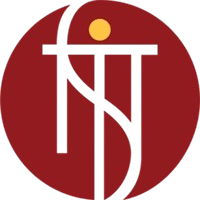

Full-Stack Development
Final-year B.Tech CSE at NIT Sikkim
Hello, I am Gaurav
I build AI-first web products.
I build AI-first web products end to end: React front ends, Python and Java REST back ends on PostgreSQL and MySQL, and LLM features on top of them, including RAG assistants, tool-calling AI agents, and MCP servers.
Open to internships
Full Stack + AI
Technical Skills
Full-stack engineering, generative AI, and production back-end foundations.
Core Strengths
- Build full-stack products with React.js and Next.js front ends over FastAPI, Flask, and Spring Boot REST APIs, with JWT authentication, role-based access control, WebSockets, and Server-Sent Events.
- Ship LLM features: RAG with SentenceTransformers and FAISS, function calling and structured output, tool-calling AI agents, and Model Context Protocol (MCP) servers.
- Work deep in PostgreSQL (migrations, triggers, row-level security, connection pooling, query tuning) alongside MySQL, Redis, and MongoDB.
- Deliver with Git, Docker, Docker Compose, GitHub Actions CI/CD, Linux, and AWS S3.
Generative AI / LLM Systems
DSA and Problem Solving
Education

National Institute of Technology, Sikkim
Bachelor of Technology in Computer Science and Engineering
Aug 2023 - May 2027
Current CGPA: 9.17/10.0 with a strong focus on software engineering, generative AI, and product development.
- GATE 2026 Computer Science: All India Rank 8211 among 200,000+ candidates.
- Class XII (CBSE, PCM): 86.6% and Class X (CBSE): 90.6%.
Work Experience
Blessing Softech Pvt. Ltd.
Software Engineering Intern (Backend and QA)
Jun 2026 - Aug 2026 | Remote
Worked on the Fonazo AI Voice Platform, a production LLM voice agent.
- Shipped agent configuration versioning and rollback end to end: schema migration, a trigger that snapshots every config change into append-only history, row-level security, and REST APIs that re-validate before restoring, keeping the 181-test regression suite green.
- Root-caused and fixed three production defects on the live FastAPI and PostgreSQL service, including connection-pool exhaustion that dropped calls under load.
- Measured the end-to-end latency budget of the AI pipeline and isolated embedding-model cold start as the dominant first-call cost.
- Owned the release gate: regression runs, defect reports, and prompt-injection and PII-disclosure testing of the LLM agent.
BLG Technologies Pvt. Ltd.
Software Development Engineering Intern
Dec 2025 - Mar 2026 | Remote
Built LLM-based tender eligibility screening and document intelligence tooling.
- Lifted classification accuracy from 70% to 85% through iterative prompt and pipeline tuning, with a human-in-the-loop path for low-confidence predictions.
- Parsed and normalized 500+ unstructured documents into standardized binders, cutting reviewer time by 60%.
- Served it through Flask REST APIs on PostgreSQL with React components, automating the submission, review, and sign-off workflow and cutting manual effort by 40%.
YantraPragya
AI Engineering Intern
Dec 2025 - Jan 2026 | Remote
Developed a custom U-Net based semantic segmentation pipeline for dental X-ray analysis.
- Achieved 92% accuracy using TensorFlow, Keras, and encoder-decoder modeling with skip connections.
- Improved generalization with augmentation and training optimizations.
- Reduced training time by 30% through Batch Normalization and hyperparameter tuning.
QodeMatrix Tech Solutions
Full Stack Intern
08 Dec 2025 - 08 Feb 2026
Certificate No. QMTS26SN0002
Successfully completed internship with strong dedication, sincerity, and eagerness to learn new technologies and concepts.
- Demonstrated responsibility, professionalism, and commitment toward assigned tasks.
- Adapted quickly to a dynamic work environment and regularly took initiative.
- Maintained strong communication and teamwork while fulfilling responsibilities effectively.
Projects
Selected projects across generative AI, agent tooling, research, and full-stack product development.
Context-Aware AI Assistant (RAG)
Python, FastAPI, SentenceTransformers, FAISS, Llama-3 (Groq), Docker
A containerized AI assistant behind a browser extension. Chunking, embeddings, and FAISS vector search ground every answer in the page you are reading, with the response streamed token by token over Server-Sent Events.
AI Agents: Tool-Calling Loop and MCP Servers
Python, MCP, OpenClaw
A hand-built tool-calling agent loop (model call, tool dispatch, result feedback, termination, failure handling) with per-step logs so every run can be replayed, plus MCP servers exposing custom tools to agents.
Ongoing
Library Management System
Java 21, Spring Boot, Spring Security, JPA, MySQL, JWT, React.js
An issue-return lifecycle across 4 JPA entities with guard conditions rejecting invalid borrows, and 30+ REST endpoints behind stateless JWT authentication and role-based access control, consumed by a React admin dashboard.
AI Code Review Environment
Python, Pydantic, OpenAI-compatible client, Docker
An OpenEnv environment that scores LLM code-review agents: typed reset/step/state API, three deterministic graders (bug fix, optimization, security refactor) with shaped rewards, and a baseline inference script.
Steward: Memory-Aware LLM Inference
Python, PyTorch, Hugging Face, Qwen3-8B
First-author research. An evaluation pipeline and a controller that allocates GPU memory across concurrent LLM requests: on 480 real requests, up to +15.4 F1 over uniform allocation with zero out-of-memory failures.
Research in progress
Smart Expense Splitter
React.js, Vite, FastAPI, Python, Recharts, PostgreSQL
Built a full-stack expense management SPA with OCR-based bill parsing, spending analytics, and persistent backend APIs.
Achievements and Certifications
Competitive programming, national exams, certifications, and open-source contributions.
LeetCode Knight
Top 5% on LeetCode with 500+ problems solved across graphs, trees, dynamic programming, and algorithm optimization.
GATE 2026 CS: AIR 8211
All India Rank 8211 in GATE 2026 Computer Science among 200,000+ candidates.
NPTEL Elite: Large Language Models
Elite certification (top 5%) in Introduction to Large Language Models, IIT Madras.
McKinsey Forward Programme
Completed the McKinsey Forward Programme.
Smart India Hackathon 2024
Participated at national level in SIH 2024, competing among 10,000+ teams across India.
Open Source Contributor
Merged pull requests in career-pilot (GSSoC): an AI-powered job description summarizer and reworked PDF generation with Puppeteer.
Leadership and Involvement
Campus contribution through clubs, workshops, hackathons, and event support.
Active Member, Devcans
Development and Coding Club, NIT Sikkim
Nov 2024 - Present
Organized workshops and hackathons for 100+ students and mentored peers in DSA and backend development.
Workshops
Hackathons
100+ Students
Web Development and Publicity Volunteer
Udgam Cultural Fest, NIT Sikkim
Nov 2024
Supported official fest web development with responsive UI work and an event registration module.
Responsive UI
Event Website
Contact Me
Discuss a project, internship, collaboration, or just say hi.